第一周：质点运动学¶
约 9075 个字 23 张图片 预计阅读时间 45 分钟
学习目的：引入微积分后对运动的描述是否会更加直观，带来什么新的特色？¶
- 概念
位移矢量
❗ 运动方程
轨迹方程
轨迹参数方程
位移==\(Δ\vec r\)==
路程：轨迹长度==\(Δr\)==
速度速率平均瞬时
对匀加速运动，才满足高中阶段的公式们
- 矢量，注意方向
（矢量求导：按基底分解分别求导）
一维问题不用加箭头，但仍是矢量！
- 注意r,v,a的微分关系
化为单一变量求解微分方程
- 两种分解
直角坐标系:x,y,z
-
自然坐标系:（\(l（路程）,\vec t,\vec n\)）[三个基本量是变量]
et/ \(\vec t\)（切向_tangential）速度方向,\(e_n\) / \(\vec n\)（法向normal_ ）与速度垂直指向圆心的方向
\(\vec v=v\vec t\)
微分关系：\(d\vec e_t = d\theta \vec e_n\)
\(\vec a=\frac {dv}{dt}\vec e_t+\frac{v^2}{\rho}\vec e_n\)=\(\vec a_t+\vec a_n\)
- 圆周运动（注意：w,\(\beta\)等概念只在圆周运动中有效）
角速度w：一般当做标量处理，方向与大小分开讨论；特殊时看做矢量（一维情况在矢量看做有正负方向的标量）
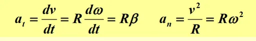
- 相对运动
绝对=相对+牵连 \(\vec{r} = \vec{r'} + \vec{R}\)$
\vec v=\vec v’+\vec u$; \(\vec a=\vec a’+\vec a_0\)
\(\vec{r} = \vec{r'} + \vec{R}\)
参照系，物体：物体对参照系
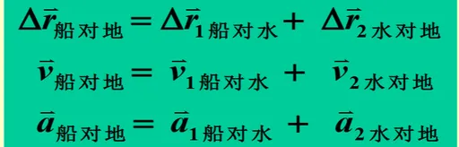
回顾：通过合适的==分解方式==，找到r,v,a三者的==矢量==关系，求解微分方程
第二周1：牛顿定律与非惯性系¶
学习目的：同样的动力学，相比高中引入了哪些新概念，新理解，新严格定义¶
-
概念
-
惯性系:
满足牛一的参考系（其实循环论证了）
具体问题具体分析（.e.g.考虑地球自转，则地面非惯性系）
- 惯性：物体保持运动状态不变的能力
- 质量:惯性大小的量度==（平动）==
- 动量\(\vec p=m\vec v\)
- 力定义：\(\vec F=\frac {d\vec p}{dt}\)
- 牛二:与力的定义是一回事
==冲量形式,==矢量式
- 牛三:由牛二+试验结果(动量守恒推出)
针对真实的力，惯性力不存在相互作用力
- 力万有引力:负号；引力质量
重力
弹性力,胡克定律
摩擦力,静摩擦系数略大于动
- 量纲表示导出量怎样由基本量组合而成的式子
L,M,T;其他导出量的量纲都可用L、M和T 的指数幂乘积表示出来
力学相对性原理
- 非惯性系
-
惯性力：
反应牵连加速度的结果，不存在反作用力
做题技巧¶
- 注意：
画图中矢量不加箭头（防止相互作用力混淆）
“轻物”：所受合外力为0
一维问题矢量注意正方向
变力用微分
g取9.8
- 思路：
- 确定研究对象和参照系
- 隔离，受力分析
- 分析加速度牵连关系
- 在惯性系中列牛二定律（矢量式）
- 建立合适坐标系（自然，直角），列方程，使方程数与未知数数量相等
- 解方程：化为==只有两个变量，==解微分方程【要求很强的常微分能力】
三大牛顿定理都只能在惯性系中使用
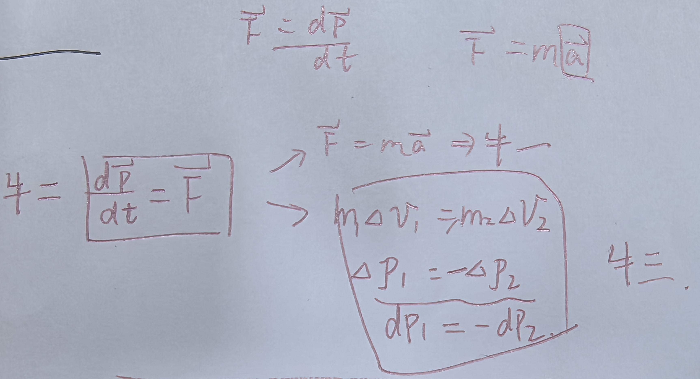
【注意：一个二维矢量式其实是两个方程】
第二周2：动量¶
- 质点动量定理：「只适用于惯性系」
冲量
冲力，平均冲力
矢量性：单一分量仍成立
重力不要忽略
❗ 不要忽略重力
g=9.8
- 质点系动量定理
质点系总动量的增量等于合外力的冲量
解决问题时对多对象列质点动量定理的简化
（一个数学问题：积分号与求和号交换位置的条件：符号里面的函数的累加和收敛「级数收敛」）
- 动量守恒定律
爆炸问题，分离问题
注意分量方向的
Important
- 质心运动定律
质心【研究质点系的运动时，引入质心】
-
质心运动定律
\(\vec P =m\vec v_c\)
\(\vec F=m\vec a_c\)
-
质心参考系
原点选在质心上的平动参考系
一个质点系可分解为质心整体的运动和各质点相对质心的运动
\(\vec v_c'\)=0;\(\vec P'=0\)[零动量参考系]
- 密舍尔斯基方程
变质量系统
⚠️注意质量是关于t的变量m(t)
不要忽略m与dm间冲力
推导主体运动方程：为避免变质量问题，将m与dm作为整体列质点系动量定理，忽略小量，得
⇒\(m\frac {d\vec v}{dt}\)(主体加速度)=\(\vec F\)（合外力）+\(\vec v'\frac{dm}{dt}\)（流动物对主体的作用力）
火箭运动：\(\vec v_t=\vec v'ln\frac{m_0}{m_t}\),多级:\(\vec v_t=\vec v'ln\frac{m_{10}}{m_1}\frac{m_{20}}{m_2}\frac{m_{30}}{m_3}\)(本质是lnx增速越来越慢)
第三周1：功与能¶
- 概念
-
功A
\(dA=\vec Fd\vec r=F_t|d\vec r|=F_tdl\)(Ft为F沿轨道切向方向分量)
=Fxdx+Fydy+Fzdz
- 质点动能定理合外力所做功等于质点动能增量
Ft=\(ma_t\)=m\(\frac {dv}{dt}\)(v为速率，速度大小)
\(dA=F_tdl=m\frac{dv}{dt}dl=mvdv\)
- 质点系动能定理本质相互作用的物体位移不相等
\(A_外+A_内=E_k-E_{k0}\)
- 相互作用力做功\(dA=F_{12}d\vec r_1+F_{21}d\vec r_2=F_{21}(d\vec r_2-d\vec r_1)=F_{21}d(\vec r_2-\vec r_1)\)
相对作用力与参考系选择无关
可以选择一个对象为参考系，则力对另一对象所做的功就是相互作用力做功的总和
- 保守力【在内力范围内讨论】
我们讨论保守力的目的在于确定一种形式的势能，只有保守力才能定义势能；
相互作用力做功之和与路径无关，只决定与始末相对位置的力
可以发现：若对与矢量积分→非保守力；对于标量积分→保守力
- 势能（与保守力的关系）内力是保守力，才引入
势能增量：保守力做功之和的负值
势能差：保守力做功之和
势能：从该位置沿任意路径变到势能零点的过程中，保守内力所做的功
保守内力等于势能梯度的负值
- 功能原理\(A_{外} + A_{内非} = (E_k + E_p) - (E_{k0} + E_{p0})\)
将保守力移到另一边变为势能
- 机械能守恒定律若 \(A_{外} + A_{内非} = 0\)则\(E_{k} + E_{p} = E_{k0} + E_{p0} =\)常量
第三周2：碰撞与角动量¶
碰撞¶
恢复系数：\(e = \frac{v_2 - v_1}{v_{10} - v_{20}}\)
动能变化：\(- \Delta E_{k} = \frac{1}{2}(1-e^{2})\frac{m_{1}m_{2}}{m_{1}+m_{2}}(v_{10}-v_{20})^{2}\)
角动量¶
-
概念
-
角动量：
\(\vec L = \vec r \times \vec p = \vec r \times m \vec v\)
- 力矩\(M = r \times F\)
- 质点角动量定理\(M = \frac{\mathrm{d}L}{\mathrm{d}t}\)
\(\int_{t_0}^t M dt = L - L_0\)
- 质点角动量守恒定理若M = 0,则L =常矢量
- 质点系角动量定理\(M = \frac{dL}{dt}\)
式中L是质点系对某一固定点的总角动量,
M为所有外力对该固定点力矩的矢量和,也称合外力矩。（内力力矩矢量和为0）
- 适用场景
滑轮，圆周运动，天体运动
解题¶
- 注意
滑块沿斜面滑倒地上有动量损失
第四周：刚体力学¶
- 定义
刚体是指在外力作用下，其内部各个部分之间的相对位置不发生变化的物体，即刚体在变形条件下保持其形状和体积不变。换句话说，刚体在运动过程中，可以视为一个统一的整体，其各部分之间的距离始终保持不变。
- 运动分类
平动
定轴转动
定点转动（e.g.陀螺）
-
平面运动：质心平动+绕==质心轴==转动
在运动过程中，刚体上任一点与某一固定平面的距离保持不变
重要特点是它可以简化为平面图形在自身平面内的运动，不需要考虑刚体厚度
一般运动：平动+转动
- 定轴转动
任意质点的\(\theta,w,\beta\)代表整体的\(\theta,w,\beta\)（对定点也成立）
概念：转动平面
- 动力学:定轴转动定律
-
对轴的力矩
M=Fd
F:转动平面上分力的切向分量
d：力臂
- 定轴转动定律\(M=J\beta\)
由牛二\(\vec F_内+\vec F_外=m\vec a_i\),同乘\(r_i\)再求和得出
- 转动惯量
衡量转动的惯性
\(J=\sum m_ir_i^2=\int r^2dm\)（dm是所有距转轴r的质量元的总质量）
平行轴定理 \(I = I_c + Md^2\)
垂直轴定理【只对薄板成立】
对于一个薄且平面的刚体（或截面），设其位于 xy 平面内，绕 x -轴和 y 轴的转动惯量分别为 I_x 和 I_y ，绕垂直于平面且经过同一点（通常是质心）的 z -轴的转动惯量为 I_z ，则垂直轴定理说明： \(I_z = I_x + I_y\)
-
典型特殊转动惯量
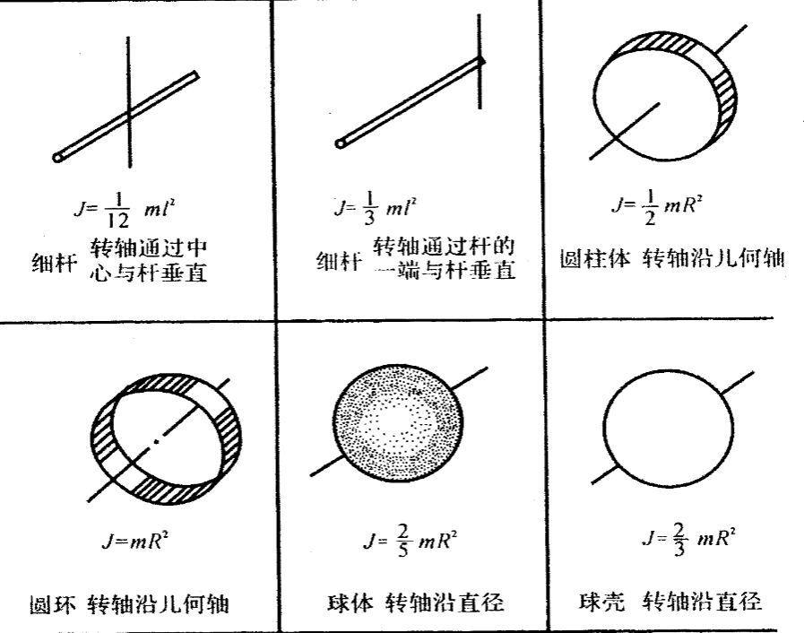
dV=径向长度×极角长度×方位角长度=dr×(rdθ)×(r_sin_θdϕ)
- 回转半径
\(R_G=\sqrt \frac{J}{m}\)
回转半径越大，质量分布离旋转轴越远，物体越难旋转。
解题¶
【解题步骤】：
(1)确定研究对象，进行受力分析，画出隔离体受力图;
(2)建立坐标系，假设a、β的==正方向==，并尽可能使两者在运动方向保持一致;
(3)对刚体的平动用牛顿第二定律，对刚体的转动用转动定律，列联立方程；
(4)由物体之间的连接关系及角量与线量的对应关系，列出==补充方程==；【纯滚动条件，沿绳条件】
(5)求解方程，并分析结果的合理性与物理意义。
❗ 如果滑轮不光滑，做变速运动，则滑轮两端绳子上力不再相等
合外力矩是合/外力矩，而不是合外力/矩；但对于重力，可以等效为质心上重力的力矩【重力相对质心的力矩为0】all：当力的方向一致时，合外力矩等于合外力的力矩
对过质心的轴，不用计算惯性力的力矩，转动定律总是成立【惯性力相对质心的力矩为0】
第五周1：定轴转动的动能，角动量定理¶
动能定理¶
- 转动动能
\(E_k=1/2 Jw^2\)
- 力矩的功
\(dA=F_tdr=F_trd\theta=Md\theta\)
\(A=M(\theta-\theta_0)\)
\(P=Mw\)
- 刚体定轴转动动能定理
由于是刚体，所以\(A_{内非}\)=0
$A_外=
$$
\int ^\theta _{\theta_0}Md\theta\(=\)\Delta(½Jw^2)$
-
含转动刚体的质点系
$A_外+A_{内非}=
$$
(E_k+E_p)-(E_{k_0}-E_{p_0})$
Important
- 柯尼希定理
\(E_k=无限制=\sum \frac{1}{2}m_iv_i^2=绕定轴转动=\frac{1}{2}Jw^2=绕定轴且质心轴与固定轴平行=\frac{1}{2}J_cw^2+\frac{1}{2}m_cv_c^2\)
角动量定理¶
- 质点对轴的角动量
\(L=mrv_t\)
- 刚体对轴的角动量
\(L=\sum m_ir_iv_i=\sum m_ir_i^2w=Jw\)
- 刚体定轴转动角动量定理
\(M=\frac{dL}{dt}=\frac{d(Jw)}{dt}\)【适用于非刚体】
$=^{若为定轴转动的刚体，J为定值}=
$$
J\beta$【只适用刚体】
-
冲量矩
对转轴的外力矩之和M在to到t时间内的累积作用，称为外力矩之和对转轴的冲量矩
\(\int_{t_0}^{t} Mdt = J\omega - J_0\omega_0\)
-
角动量守恒定律
当M=0，即合外力力矩为0，则角动量\(Jw\)守恒
解题¶
绳子张力为非保守内力，但做总功为0【两侧做功抵消】
定轴上有冲量（由于冲量不确定，不能用动量定理【刚体参与的碰撞，一般动量不守恒】）
定轴上没有角冲量（用角动量定理)
求轴上作用力：质心动量定理【注意切向法向加速度都存在】
注意滑轮状态：轻滑轮 ⇒ 滑轮角动量为0
绳与滑轮之间无相对滑动 ⇒ 速度关系v=wr
第五周2：平面运动¶
定义：垂直线上运动状态一致，只用研究二维平面
- 分解：质心平动 +绕质心转动
(将平面运动这种更普遍的运动形式分解为更为特殊的运动形式)
绕顺时轴转动
- 运动学
$\vec v_i=\vec v_c+\vec v_{ic}$=$\vec v_c+\vec w\times \vec r_i$
-
动力学
\(\vec F=m\vec a_c\)
\(M_c=J_c\beta\)
\(M_p=J_p\beta\)
能量
- 纯滚动
接触点：
无滑动
v=0
f为静摩擦力，不做功
解题¶
-
对纯滚动的分析：（关键，静摩擦力f的方向不确定）
不包括f的合外力 +（\(a_c\)方向⇒β方向）⇒判断f方向：是否唯一？
-
对于动滑轮，注意伽利略变换
第六周1：定点运动，流体运动¶
定点运动¶
-
陀螺仪
条件：有轴对称性，且转动惯量很大的刚体，研究其定点转动
-
特殊的陀螺仪
定向指示仪：质心为定点⇒M=0⇒L守恒⇒飞轮的对称轴方向不变
杠杆回旋仪：轴水平
\(M=\frac {dL}{dt}\)⇒\(\vec Mdt=d\vec L=Ldθ\)⇒\(\frac {d\theta}{dt}=\frac{M}{L}\)
L的方向为轴的方向（对w右手螺旋），\(\vec M=\vec r\times \vec F\),一般在垂直纸面方向
由于M方向与L垂直，故dL与L垂直⇒M只改变L的大小，不改变L的方向；
陀螺仪进动的方向为M的方向
旋进角速度：（对杠杆回旋仪）$\Omega =\frac{dθ}{dt}=
$$
\frac {M}{L}\(**=**\)\frac{mgr_c}{Jw}$
❗ 一般的：
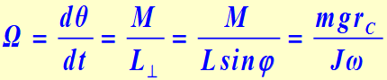
==\(L_{\perp}\)==为L在水平面上的投影，因为θ是在水平面内的，只有\(L_{\perp}\)才满足\(d\vec L=\vec Ldθ\)
(可知：要满足\(\Omega<<w\),要求J很大，w很大（高速旋转）)
流体力学¶
- 条件
不可压缩，无摩擦，定常流动（v与t无关）
- 连续性方程
\(Sv=常量\)，
\(\rho Sv=常量\)
- 伯努利方程
\(pV+1/2mv^2+mgh=常量\)(\(pV\)为压力能)
\(p+1/2\rho v^2+\rho gh=常量\)
第六周2：相对论变换与时空观¶
-
变换
-
基本原理
光速不变
相对性原理（没有优越的惯性系）
时间空间均匀性
- 洛伦兹变换令\(\gamma = \frac{1}{\sqrt{1 - \frac{u^2}{c^2}}}\)
\(\begin{cases} x' = \frac{x - ut}{\sqrt{1 - \frac{u^2}{c^2}}} = \gamma(x - ut) \\ y' = y \\ z' = z \\ t' = \frac{t - \frac{ux}{c^2}}{\sqrt{1 - \frac{u^2}{c^2}}} = \gamma(t - \frac{ux}{c^2}) \end{cases}\)
- 路程时间间隔关系\(\begin{cases} \Delta x' = \frac{\Delta x - u \Delta t}{\sqrt{1 - \frac{u^2}{c^2}}} \\ \Delta t' = \frac{\Delta t - u \Delta x / c^2}{\sqrt{1 - \frac{u^2}{c^2}}} \end{cases}\)
\(\begin{cases} \Delta x = \frac{\Delta x' + u \Delta t'}{\sqrt{1 - \frac{u^2}{c^2}}} \\ \Delta t = \frac{\Delta t' + u \Delta x' / c^2}{\sqrt{1 - \frac{u^2}{c^2}}} \end{cases}\)
- 爱因斯坦速度变换\(\begin{cases} v'_x = \frac{v_x - u}{1 - \frac{v_x u}{c^2}} \\ v'_y = \frac{v_y \sqrt{1 - (\frac{u}{c})^2}}{1 - \frac{v_x u}{c^2}} \\ v'_z = \frac{v_z \sqrt{1 - (\frac{u}{c})^2}}{1 - \frac{v_x u}{c^2}} \end{cases}\)
- 时空观 -
长度收缩
❗ 【固有长度】静长一定是物体相对参考系静止时两端的空间间隔
\(\Delta t'=0\) \(t_1'=t_2'\) (==\(k'\)====系中的时间)==
\(l_0=\Delta x'=x_2'-x_1'\) 但是\(L\ne \Delta x=x_2-x_1\)
有\(\Delta x=l_0=\frac{\Delta x'}{\sqrt{1-(u/c)^2}}\)
结论: \(l'=l_0\sqrt{1-(u/c)^2}\)
- 时间膨胀❗ 【固有时间】原时一定是在某参考系中同一地点发生的两个事件的时间间隔（若对应某物，则其静止 e.g \(u\)介子）
\(\Delta x=0\) \(x_1=x_2\) （K系中的位移）
\(\Delta t'\)就是\(t_2'-t_1'\)
有\(\Delta t'=\frac{\Delta t}{\sqrt{1-(u/c)^2}}\)
结论：\(\Delta t'=\frac{\Delta t_0}{\sqrt{1-(u/c)^2}}\)
- “时空间隔”的绝对性\(S = \sqrt{(x_2 - x_1)^2 + (y_2 - y_1)^2 + (z_2 - z_1)^2 - c^2(t_2 - t_1)^2}\)为定值
第七周1：相对论动力学¶
引子：根据相对性原理，应保证力学定律在洛伦兹变化下保持不变
故：重新定义质量，动量，能量，使之满足守恒定理【在相对论中，质量守恒和能量守恒本质上是同一件事的两个表现形式】
- 质量
通过两个参考系中的非弹性碰撞，可推得：
\(m=\frac{m_0}{\sqrt{1-(v/c)^2}}\)
- 动量
\(p=mv=\frac{m_0}{\sqrt{1-(v/c)^2}}v\)
- 动力学方程
\(\vec F=\frac{d\vec p}{dt}=\frac {d(\frac{m_0}{\sqrt{1-(v/c)^2}}v)}{dt}\)
- 动能
不可用经典力学公式计算，因为m并非定值
\(dE_k=Fdr=\frac {dp}{dt}dr=dp\cdot v=dp\cdot \frac{p}{m}=\frac{1}{2m}d(p^2)\)
由动量公式⇒\(m^2c^2-p^2=m_0^2c^2\)⇒\(d(p^2)=d(m^2c^2)=c^22mdm\)
$E_k=\int dE_k=\int \frac{1}{2m}d(p^2)=
$$
\int c2dm=c2(m-m_0)$
质能关系：\(E=mc^2=E_k+m_0c^2\)
-
能动关系
\(E^2=(pc)^2+(m_0c^2)^2\)【直角三角形】
\((mc)^2=(m_0c)^2+(mv)^2\)
第七周2：简谐运动¶
标准方程¶
\(x=Acos(wt+\phi)\)
w由系统物理特性决定（e.g. k, m ……）
\(A,\phi\)由\(x0,v0\)决定
求\(A,\phi\):
\(A=\sqrt{x^2+(v/w)^2}=\sqrt{x0^2+(v0/w)^2}\)【本质与机械能守恒\(1/2kA^2=1/2kx^2+1/2mv^2\)是等效的式子】
\(tan\phi=-\frac{v0}{wx0}\);\(cos\phi=\frac{x_0}{A}\)
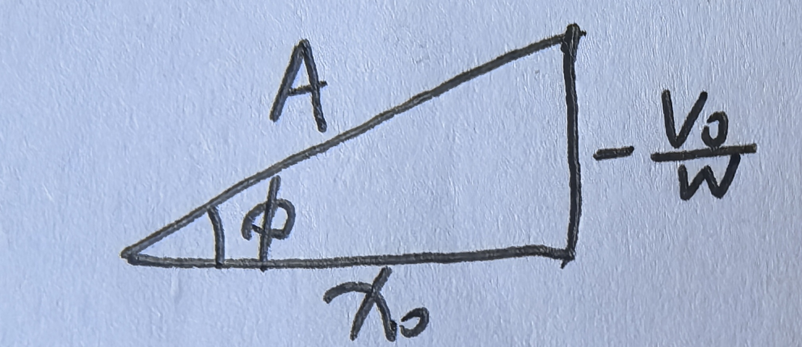
由x0确定\(\phi\)的大小，由v0确定\(\phi\)的方向
旋转矢量法：v方向为x逆时针\(\pi/2\)，a方向为v逆时针\(\pi/2\)
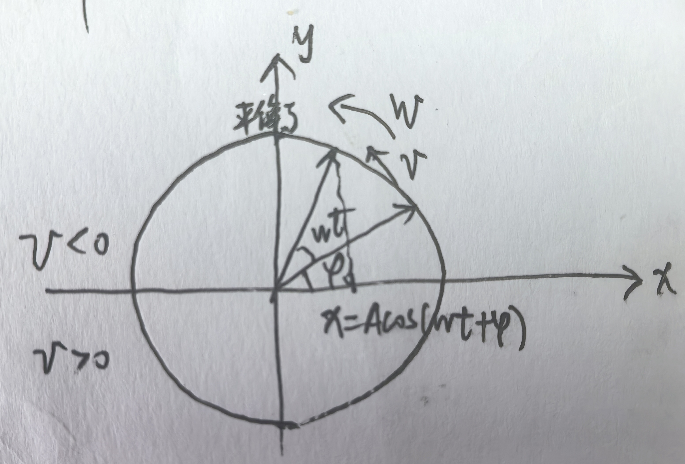
运动学特征¶
\(a=-w^2x\)/ \(\beta =-w^2\theta\)
动力学条件¶
\(F=-mw^2x=-kx\)/ \(M=J\beta=-Jw^2\theta=-mgl\theta=-k\theta\)
实例：¶
弹簧：
\(F=-kx=-mw^2x\)
\(w=\sqrt{\frac{k}{m}}\)
单摆：
\(M=-mgl\theta =J\beta =ml^2\beta =-ml^2w^2\theta\)
(\(k=mgl\))
\(w=\sqrt{\frac{g}{l}}\)
复摆：
\(M=-mgl\theta =J\beta =-Jw^2\theta\)
(\(k=mgl\))
\(w=\sqrt{\frac{mgl}{J}}\)
扭摆：
\(M=-k\theta=J\beta=-Jw^2\theta\)
\(w=\sqrt{\frac{k}{J}}\)
能量¶
\(Ep=1/2kx^2=1/2kA^2cos^2(wt+\phi)\)
\(Ek=1/2mv^2=1/2mw^2A^2sin^2(wt+\phi)\)
\(E=Ep+Ek=1/2mv_m^2=1/2kA^2\)
plus: \(ax^2+bv^2=c\)↔做简谐运动→系统机械能守恒
第八周1：各类振动，振动的合成与分解¶
平衡位置附近振动¶
形象概括了单摆，复摆等的运动。注意弹簧不是因为这个原因，弹簧原理平衡点处也做简谐运动
【保守力场中力与势能的关系：\(F(x)=-\frac{dE_p(x)}{dx}\)】
当且仅当平衡点是稳定极小值点，且势能在平衡点附近二次项主导时，运动近似为简谐运动.
\(F=F(0)+F'(0)x+o(x)=F'(0)x\)，其中\(F'(0)=\frac{dF}{dx}|_{x=0}<=0\)
所以平衡位置附近力为回复力
振动合成¶
同向同频[定性+定量] ^85e7a7¶
\(x1=A1cos(wt+\phi1)\)
\(x2=A2cos(wt+\phi 2)\)
\(A'=\sqrt{A1^2+A2^2+2A1A2cos(\phi2-\phi1)}\)
\(\phi = \arctan \frac{A1 \sin \phi1 + A2 \sin \phi2}{A1 \cos \phi1 + A2 \cos \phi2}\)
通过旋转矢量法法解决 ^pbzbzy
同向 不同频【定性+会算\(\nu_{拍}\)】¶
\(x1=A1cos(w1t+\phi1)\)
\(x2=A2cos(w2t+\phi 2)\)
此时A’是随时间的变量，合振幅随时间变化
定性观察：取\(A1=A2=A\)
则\(x=2Acos(\frac{w1-w2}{2}t+\frac{\phi2-\phi1}{2})cos(\frac{w1+w2}{2}t+\frac{\phi2+\phi1}{2})\)
若w1-w2<<w1+w2,则前一项cos“缓慢变化”\(x=A'cos(\frac{w1+w2}{2}t+\frac{\phi2+\phi1}{2})\)
\(A'=cos(\frac{w1-w2}{2}t+\frac{\phi2-\phi1}{2})\) 振幅做周期性变化的简谐振动
拍：合振动强弱交替变化的现象
拍频：单位时间内振动忽强的次数
\(\nu拍=cos的频率的两倍（振幅不分正负，一个余弦周期内振幅变化两次）=\frac{1}{2\pi}\frac{w1-w2}{2}*2=\frac{1}{2\pi}(w2-w1)=\nu2-\nu1\)
⚠️：\(\nu_拍=\nu_2-\nu_1\)
垂直 同频【同相反相：定性定量；一般情况：判断椭圆顺逆时针】¶
\(x1=A1cos(wt+\phi1)\)
\(x2=A2cos(wt+\phi 2)\)
可得椭圆方程\(\frac{x^{2}}{A{1}^{2}}+\frac{y^{2}}{A{2}^{2}}-\frac{2xy}{A{1}A{2}}\cos (\varphi{2}-\varphi{1})=\sin^{2}(\varphi{2}-\varphi{1})\)
讨论：
同相位：得\(y=\frac{A2}{A1}x\),\(r=\sqrt{A1^2+A2^2}cos(wt+\phi)\)
反相位：\(y=-\frac{A2}{A1}x\)，\(r=\sqrt{A1^2+A2^2}cos(wt+\phi)\)
\(φ₂ - φ₁ = ± \frac{π}{2}\)时，\(\frac{x²}{A1^2} + \frac{y^2}{A2^2} = 1\) 圆
一般情况：斜椭圆。通过取点法：\(wt+\phi=0 / \frac{\pi}{2}\)或旋转矢量法（x,y两个方向的矢量圆）
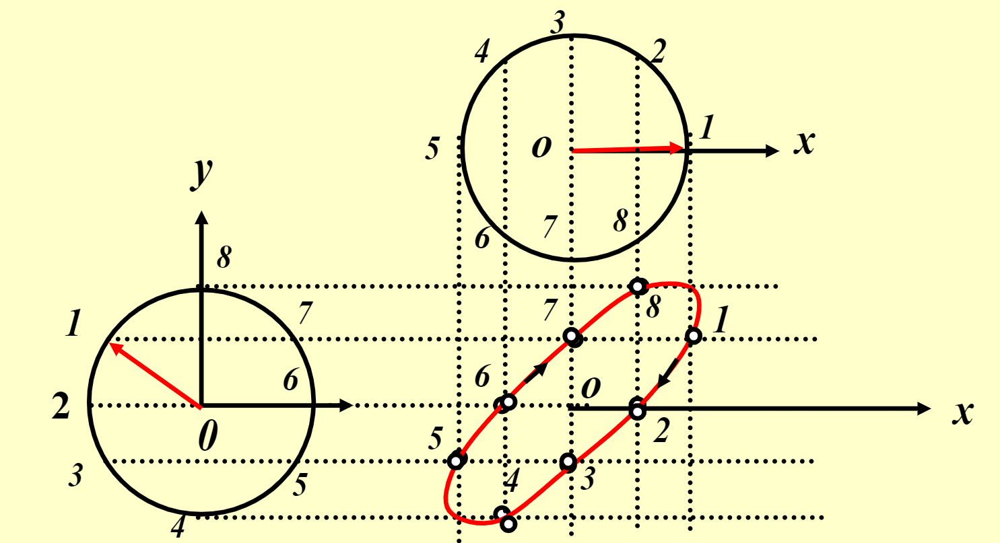
垂直 不同频【定性+频率整数时根据图形推出频率比】¶
\(\Delta\varphi = (\omega2-\omega1)t + (\varphi2-\varphi1)\)
当频率差很小时，与同向不同频相似，可看作垂直同频按椭圆运动从0到2π依次变化
一般轨迹不稳定无规律
两个频率成简单的整数比时：合成运动轨迹稳定，作周期性运动，合运动的轨迹图形是李萨如图形
满足
\(\frac{ny}{nx} = \frac{Ty}{Tx} = \frac{\nu x}{\nu y} = \frac{\omega_x}{\omega_y}\)，nx为曲线与一水平线的最多交点数，ny为曲线与一垂直线的最多交点数
第八周2：波¶
条件：¶
波源，弹性介质
概念¶
- 波线：波传播方向所引的直线
- 波面：T时刻振动状态相同（同相位）的质点所构成的曲面，与波线垂直
- 波前：最前方的波面
- 波长：波传播一个周期所走的距离/由相同运动状态的两点的距离 【由介质和波的频率决定】
- 周期：完整振动通过一点（传播一个波长）所需时间【完成一次振动所需时间】
- 频率：单位时间内传播出的波长数【单位时间内完成振动数】 【决定于波源】
- 波速：单位时间内振动传递的距离=\(\lambda\nu\)【波速取决于介质的弹性和密度】
- 平面简谐波
- \(x=Acos[w(t-\frac{x}{u})+\phi]=Acos[\frac{2\pi}{T}(t-\frac{x}{u})+\phi]\)= \(Acos(wt-\frac{2\pi}{\lambda}x+\phi)\)
理解：¶
- 【时间引起相位的变化】后传播到的点相位落后
- 波在时间上的传播是相位的传播
- 【位移引起相位的变化】(t+△t)时刻(x+△x)处质点的位移=t时刻x处质点的位移
- 波在空间上的传播是波形的传播
物理量间的关系：¶
两点，同一时间(\(\Delta t=0\)）：\(\frac{∆x}{λ} = \frac{Δφ}{2π}\)
两点，（\(\Delta \phi=0\), 即波从一点传到另一点的过程）\(\frac{∆x}{λ} = \frac{∆t}{T}\)
波线上同一个质点的两个时刻的时间间隔和相位差的关系: \(\frac{∆t}{T} = \frac{Δφ}{2π}\)
波动微分方程¶
机械波-2.pdf
问题引入：\(y=f(x,t)\)，该方程形式到底如何呢？
运动学规律：¶
\(\frac{\partial^2 y}{\partial x^2} = \frac{1}{u^2} \frac{\partial^2 y}{\partial t^2}\)
下面：我们致力于求解u：
动力学规律：¶
对细棒（代表纵波）：¶
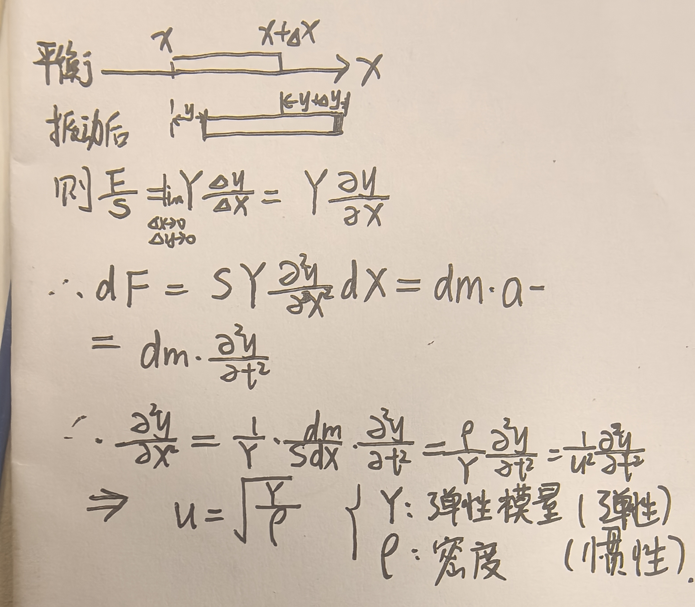
对绳子（代表横波）：¶
绳波演示软件 1.1.37
- 近似：
- 在大部分波动分析中，为简化问题，通常假定绳子的张力保持恒定，不考虑波动导致的微小伸长和张力变化：\(|F_1|=|F_2|=F\)
- 一般认为是小振幅（微小扰动）：\(\theta\to 0,sin\theta=tan\theta=\frac{\partial y}{\partial x}\)
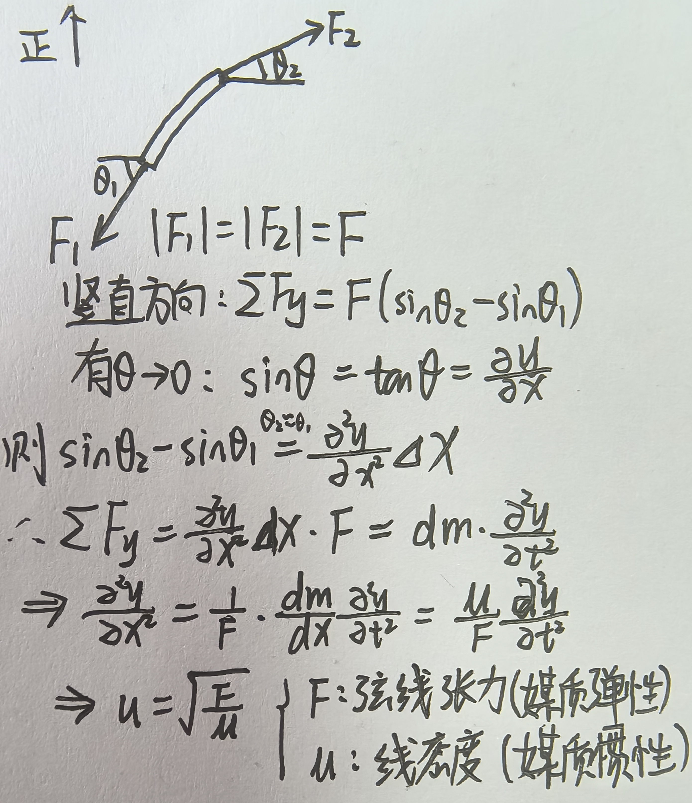
可知：波速确实由介质特性（惯性，弹性）决定，\(u=\sqrt{\frac{弹性}{惯性}}\)【直观理解：弹性越好，波速越快；越重，波速越慢】 ^431b6b
能量，能流密度¶
波的能量¶
对细棒（代表纵波）：¶
\(\Delta E_p = \Delta E_K = \frac{1}{2}\rho \Delta V\omega^2 A^2 \sin^2 \omega (t - \frac{x}{u})\)
\(\Delta E = \Delta E_p + \Delta E_K = \rho \Delta V\omega^2 A^2 \sin^2 \omega (t - \frac{x}{u})\)
能量密度（单位体积内机械能）：\(w = \frac{\Delta E}{\Delta V} = e_p + e_K = \rho \omega^2 A^2 \sin^2 \omega (t - \frac{x}{u}) = w(t, x)\)
平均体能量密度：\(\bar{w} = \frac{1}{2} \rho \omega^2 A^2\)
故：细棒中任意一点在任何时刻势能动能大小相同，能量沿波的传播方向向前传播
对绳子（代表横波）：¶
\(\Delta E_p = \Delta E_K\)
\(\Delta E = \mu A^2 \omega^2 sin^2 \omega(t - \frac{x}{u}) \Delta x\)
平均线能量密度\(\bar{w} = \frac{1}{2} \mu \omega^2 A^2\)
能流密度¶
对绳子：¶
我们用功率表现能量沿绳传播的速率，则：\(\bar{P} =\frac { \Delta \bar E}{\Delta t}=\bar wu=\frac{1}{2}u\mu A^2\omega^2\)
对细棒：¶
- 引入能流密度的概念：单位时间内通过垂直于波的传播方向单位面积的平均能量，反映能量通过细棒的传播强度
- （强度 = 每秒通过单位面积的能量 ）
- \(I = \frac{Sl \bar{w}}{St} = \bar w u=\frac{1}{2} \rho \omega^2 A^2 u\)
【共同点：都等于：\(\bar w u\)】
plus:对球面波：¶
- \(I = \frac{P_0}{4\pi r^2}\propto A^2 \quad \frac{I_1}{I_2} = \frac{r_2^2}{r_1^2} = \frac{A_1^2}{A_2^2} \quad (\frac{A_1}{A_2} = \frac{r_2}{r_1})\)
另：
（简谐波：\(I=kA^2\) 光：I=kA)
波的干涉¶
概念¶
合成波的强度在一些地方始终增强/减弱 ^673a7d
预设知识¶
- 波传播的独立性
- 播的线性叠加性（本质是二阶线性微分方程具有线性叠加性）
- 要求：满足胡克定律，振幅不是过大
波干涉的条件¶
振动方向相同（注意与传播方向的区分）
频率相同
相位差恒定 ^ucbmtr
本质：
定量分析¶
- \(y_1=A_1\cos\left[\omega t-\frac{2\pi r_1}{\lambda}+\varphi_1\right]\)
- \(y_2=A_2\cos\left[\omega t-\frac{2\pi r_2}{\lambda}+\varphi_2\right]\)
- 线性叠加（点振动合成）
- \(y=y_1+y_2=A\cos(\omega t+\varphi)\)
- 振幅\(A=\sqrt{A_1^2+A_2^2+2A_1A_2\cos\Delta\varphi}\)
- 相位差\(\Delta\varphi= \varphi _2- \varphi _1- \frac {2\pi \left ( r_2- r_1\right ) }\lambda\) (与\(t\) 无关，恒定)
- 任意点振幅恒定，相位差固定 ^33f7df
驻波¶
定义¶
干涉的特例
+振幅相等+沿相反方向传播
振幅相等：保证y1y2的A是一样的
沿相反方向传播：1.共线：y1y2中x意义相同2.相反方向传播：正负号不同
基于上面两个条件，能遇到比较好的和差化积的形式：
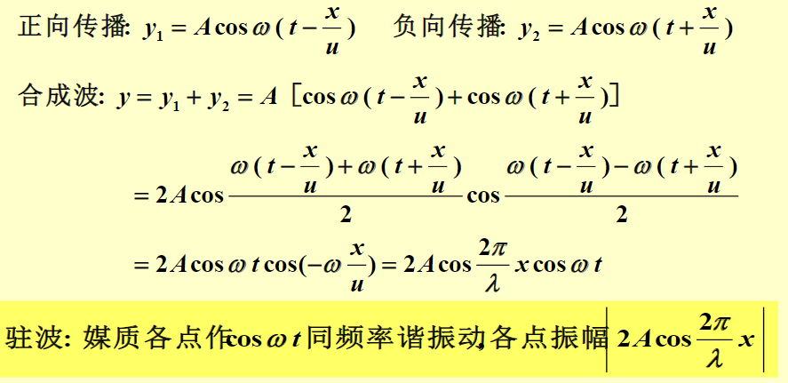
驻波表达式：两个正弦或余弦相乘，一个只与x有关，一个只与y有关
性质¶
-
干涉的统一性质：
-
没有相位的传播,两个相邻波节之间各质点的振动相位相同,波节两侧质点的振动相位相反.
【所有点\(cos(wt+\phi)\)一致，只有A不同；\(cos(\frac {2\pi}{\lambda}x\))可正可负】 - 相邻波节或波腹间距为\(\Delta x=\frac{\lambda}{2}\) ^4cb730
求反射波¶
两端点固定¶
【光疏到光密，折射率小到折射率大】
1. 入射波在固定端反射：
1. 入射：\(y_1=Acosw(t+x/u)\)
2. 有：\(y_{10}=Acosw(t)\),因为固定点处：\(y_0=y_{10}+y_{20}=0\),所以\(y_{20}=-y_{10}=Acos(wt+\pi)\)这就是半波损失的原因
3. 则反射：\(y_2=Acos[w(t-x/u)+\pi]\)【传播方向反向+半波损失】
4. 入射波与反射波符合：振幅相等，沿相反方向传播，形成驻波
2. 两端点固定的驻波：
1. 合成波：\(y=y_1+y_2= 2A\sin\frac{2\pi}{\lambda}x \sin(\omega t + \pi)\)
2. 现在要求两端点都固定（y=0)
3. 设总长L,则y(x=L, t) = 0 ⇒ \(sin\frac{2π}{λ}L = 0\)，\(\frac{2\pi}{\lambda}L = n\pi \quad (n = 1, 2, 3, \dots) \quad \lambda_n = \frac{2L}{n}, \quad \nu_n = \frac{u}{\lambda_n} = n\frac{u}{2L}\) 【不用记忆】
4.
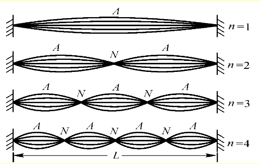
一端固定，一端自由¶
【光密到光疏，折射率大到折射率小】
自由端定义：如：光滑无质量圆环，无能量损失，但无法向右传播,能量完全返回
1. 入射波在自由端反射：
1. \(y_1 = A \cos \omega (t - \frac{x}{u})\)
2. \(y_{2L} = y_{1L} = A \cos \omega \left(t - \frac{L}{u}\right)\)
3. 则\(y_2 =A \cos \omega (t+\frac{x-L}{u}-\frac{L}{u})= A \cos \omega (t+\frac{x}{u}-\frac{2L}{u})\)
2. 一端固定，一端自由：
1. 合成波：$y=y_1+y_2=
$$
2 A \cos \frac{2\pi}{\lambda} (L-x) \cos (\omega t - \frac{2\pi}{\lambda} L)$
2. 固定端：\(y(x=0, t) = 0 \Rightarrow \cos \frac{2\pi}{\lambda} L = 0\)
3. \(L = n \frac{\lambda_n}{4} (n = 1, 3, 5, ...)\)
4.
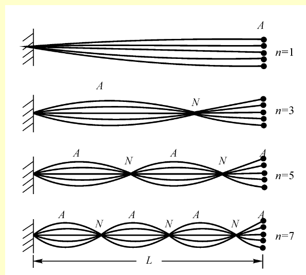
多普勒效应¶
以介质为参照系
u是波传播的速度；\(v_s,\nu_s\)是波源(sourse)的运动速度与频率；\(v_R,\nu_R\)是观察者(receiver)的运动速率与接收到的频率
波源不动，观察者相对介质运动¶
改变观察者接收到的频率频率:
观察者接收到的频率 \(\nu _R\) 是指单位时间内人耳或仪器接收到的完整波的数目(即:接收到的波长数)
\(\nu_s =u/\lambda\)
\(\nu_R=波长数/t=\frac {(u+v_R)t}{\lambda t}=\frac {u+v_R}{\lambda}=\frac{u+v_R}{u}\nu_s\) \(\to \nu_R\propto u+v_R\)
观察者不动，波源相对介质运动¶
改变介质中的波长：
介质中的波长是传播速度方向上相位相等的最近点之间的距离，由于波源的移动，波源处点与另一相位相等的点之间距离发生变化，这个距离就是波长
\(\lambda' = \lambda - V_st\) \(=(u-V_s)t\)
介质中波长变化引起观察者接收到的频率发生变化
\(\nu \propto \frac{1}{\lambda} \to \nu_R=\frac{u}{u-V_S}\nu_s\)
波源与观测者相对介质都有相对运动时¶
\(\lambda' = (u - V_S)T_S\)
\(\nu_R = \frac{u+V_R}{\lambda'} = \frac{u+V_R}{u-V_S}\nu_S\)
另：对光波¶
由相对论:\(\nu'=\sqrt{\frac{c+u}{c-u}}\nu\)
热力学¶
气体分子动理论¶
核心思想：围观量->统计平均->宏观量
需要找到链接宏观量与微观量的桥梁
基本概念与基本假设¶
基本概念：孤立系统，封闭系统，开放系统
基本假设：
【运动假设】大量，无规则；
【统计假设】均匀，随机
【微观模型假设】弹性质点，完全弹性碰撞，相互作用力忽略
压强(理想气体的压强公式)¶
联系：宏观p 与 微观\(\varepsilon_{t},\overline v^2,n,\mu\)
\(p={\frac{1}{3}}\,\mu\,n\bar v^{2}\)
- 证明 ：
- 对单个分子：\(dF=\frac{2\mu v_{ix}}{dt}\)
- 对dt内\(v_{i}\),单位时间内对dS的力：\(dF=2m_{总}v_{ix}=2\mu n_{i}v_{ix}dSv_{ix}\)（n_i为单位体积内速度为\(\vec v_i\)的粒子的单位体积分子数）
- 考虑到只有一半的粒子可以打到一侧墙壁，\(F=\sum_{i}\mu n_{i}v_{ix}^2dS\)
- 压强 \(p=\frac{dF}{dS}=\mu \sum_{i}n_{i}v_{ix^2}=\mu nv_{x}^2=\frac{1}{3}\mu v^2\)
推导：
分子平均平动动能 \({\overline{{\varepsilon_{t}}}}={\frac{1}{n}}\sum_{i}n_{i}({\frac{1}{2}}v_{i}^{2})={\frac{1}{2}}\mu\,{\overline{{v^{2}}}}\)
理想气体压强公式：\(p={\frac{1}{3}}\,n\,\mu\overline{{{v^{2}}}}={\frac{2}{3}}\,n\overline{{{\varepsilon_{\mathrm{{t}}}}}}\)
理想气体状态方程¶
联系宏观T,微观\(\varepsilon_{t}(即方均根速率)\)
\(pV=\nu RT\), \(p=nkT\) (\(\nu\) 是气体物质的量，n是单位体积分子数(分子数密度)，\(\frac{\nu}{V}=\frac{n}{N_{A}}\), \(k=\frac{R}{N_{A}}\))
推论：
温度与分子平均平动动能: \(\overline{{{\varepsilon_{\mathrm{t}}}}}=\frac{3}{2}kT\)
推导：\(p=\frac{2}{3n}\varepsilon_{t}=nkT\)
方均根速率：\(\sqrt{ \over v^2 }=\sqrt{ \frac{3RT}{M} }\)
能量均分原理¶
自由度¶
质点：三个自由度
质点系的转动：两个自由度
质点系的振动：一个自由度
能量均分原理¶
相应于每一自由度具有相同的平均能量\(\frac{1}{2}\)kT
理想气体的内能： 气体的平动动能 ＋气体的转动动能 ＋气体的振动动能(常温下忽略)
麦克斯韦速率分布律¶
定义¶
气体在平衡态下，分布在单位速率区间(dv)之内的分子数(dN)，占气体分子总数(N)的百分率
\(f(v)=\frac{1}{N}\)
\(\frac{dN}{dv}\)
面积：\(\int_{\nu_{1}}^{\nu_{2}}f(\nu)d\nu=\int_{\nu_{1}}^{\nu_{2}}\frac{d N}{N d\nu}\,d\nu=\frac{1}{N}\int_{\nu_{1}}^{\nu_{2}}d N\)
【最终会归一化】:\(\int_{0}^{\infty}f(\nu)\,d\nu=\frac{1}{N}\int d N=\frac{1}{N}\,N=1\;\)
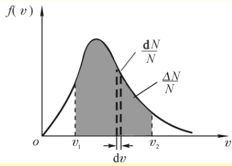
作用¶
与速率分布有关物理量的统计平均值 \(\bar{\xi} = \int_{0}^{\infty} \xi f(v) \cdot dv\), \(\bar{\xi} = \frac{\int_{v_1}^{v_2} \xi f(v) \cdot dv}{\int_{v_1}^{v_2} f(v) \cdot dv}\)
麦克斯韦速率分布函数¶
\(f(\nu)=4\pi\,(\frac{\mu}{2\pi k T})^{3/{2}}\,\,e^{-\frac{\mu\nu^{2}}{2k T}}\nu^{2}\)
推导:
麦克斯韦写出：\(f(\nu)=4\,e^{-\frac{\mu\,\nu^{2}}{2k T}}\nu^{2}\)
由归一化条件：\(\int_{0}^{+\infty}f(v)dv=1\)可解出A
三种特征速率¶
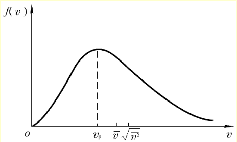
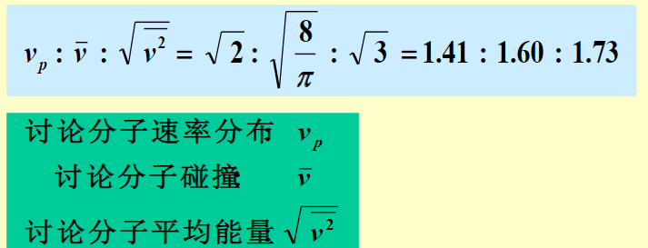
最概然速率¶
\(\nu_{p}={\sqrt{\frac{2k T}{\mu}}}={\sqrt{\frac{2R T}{M}}}\)
推导：
\(\left.{\frac{{\bf d}f(\nu)}{{\bf d}\nu}}\right|_{\nu_{P}}=0\)
平均速率¶
\(\overline{{\nu}}=\sqrt{\frac{8k T}{\pi\mu}}=\sqrt{\frac{8R T}{\pi M}}\)
推导：
\({\overline{{\nu}}}={\frac{\displaystyle\sum N_{i}\nu_{i}}{\displaystyle\sum N_{i}}}\Rightarrow{\frac{\displaystyle\int_{0}^{\infty}\nu\mathrm{d}N}{\displaystyle\int_{0}^{\infty}\mathrm{d}N}}={\frac{\displaystyle\int_{0}^{\infty}N\mathrm{y}f(\nu)\mathrm{d}\nu}{\displaystyle\int_{0}^{\infty}{\overline{{N}}}\!f(\nu)\mathrm{d}\nu}}=\int_{0}^{\infty}\nu f(\nu)\mathrm{d}\nu\)
方均根速率¶
\(\sqrt{\ \overline{{{\nu^{2}}}}}=\sqrt{\frac{3k T}{\mu}}\ =\sqrt{\frac{3R T}{M}}\)
推导：
\({\overline{{{\nu^{2}}}}}={\frac{\int_{0}^{\infty}\nu^{2}\mathbf{d}N}{\int_{0}^{\infty}\mathbf{d}N}}=\int_{0}^{\infty}\nu^{2}\mathbf{f}(\nu)\mathbf{d}\nu\)
玻尔兹曼分布率¶
对麦克斯韦分布率的推广：由于受外力场作用，分子按空间位置的分布并不均匀，需要引入体积元（空间变量）dxdydz
\(n_0\)为在\(ε_p\) = 0处的分子数密度(即:单位体积 内具有各种速度的分子总数)
有结论：
单位体积分子数：\(n = n_0 e^{-\varepsilon_P/kT}\)
对于重力场：\(\epsilon_{p}=\mu gh \to\)$
n = n_0 e^{-\frac{\varepsilon_P}{kT}} = n_0 e^{-\frac{\mu gh}{kT}} = n_0 e^{-\frac{Mgh}{RT}}$
等温气压公式:由p=nkT,得:
\(P=P_0 e^{-\frac{\mu gh}{kT}}=P_0 e^{-\frac{Mgh}{RT}}\)
推论:\(z=\frac{RT}{Mg}\ln\frac{P_0}{P}\)
平均碰撞频率与平均自由程¶
进一步考虑分子间的碰撞
分子线度：有效直径
平均碰撞频率\(\bar{Z}\)：¶
单位时间内一个分子与其它分子碰撞的平均次数
\(\bar{z} = \sqrt{2 }\pi d^2 n \bar{v}\)
证明:
取一个分子运动方向上的柱体,单位时间内体积:\(\pi d^2\bar{v_{r}}\),将两体运动转化为单体运动:\(\bar{v_{r} }=\sqrt{ 2 }\bar{ v}\),单位体积分子数n
平均自由程\(\bar{\lambda}\)：¶
一个分子在两次连续碰撞间自由运动的平均路程
证明:单位时间内总路程➗单位时间内碰撞数(平均碰撞频率)
实际气体的范德瓦尔斯方程¶
进一步对压强，体积进行修正(讨论1mol理想气体):
体积的修正:¶
考虑到气体分子有体积,别的气体分子不能进入到气体分子中,实际体积偏小
设气体体积为\(V_{0}\),每个气体分支周围\(4V_{0}\)内不可压缩,故:
1mol分子不可压缩体积\(b=4N_{A}V_{0}\)
实际分子活动空间:
压强的修正¶
考虑气体分子之间有引力,当与器壁碰撞时只受到内部的引力,实际压强偏小
有:
\(p_i \propto 器壁附近受力的分子数 \propto n\)
\(p_i \propto 吸引器壁附近分子的内部分子数 \propto n\)
所以:\(p_i \propto n^2 \propto \frac{1}{V^2}\)
\(p_{i}=\frac{a}{V^2}\) 实际：\(p_{i}=a\left( \frac{\nu}{V}\right)^2\)
\(\left( p+\frac{a}{V^2} \right)(V-b)=RT\)(1mol气体,\(\nu\)=1)
实际气体:¶
对\(\nu=\frac{m}{M}\)mol气体:
本质是将体积和压强都修正为理想气体
热力学基础¶
准静态过程¶
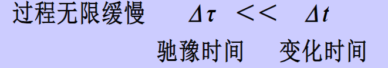
热力学第一定律V¶
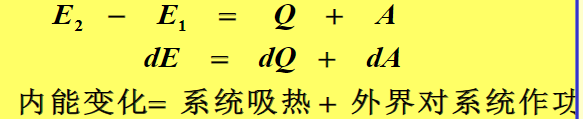
计算热量¶
\(Q=\Delta E-A\)
摩尔热容量¶
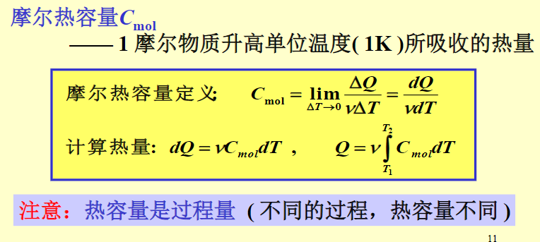
plus：气体摩尔热容可以是负值（放热）
定体摩尔热容¶
没有做功，A=0
\(Q_{V}=\Delta E=\nu {\frac{i}{2}}R\Delta T\)
\(C_{V}=\frac{i}{2}R\)
定压摩尔热容¶
\(-A=p\Delta V=\nu R\Delta T\)
\(\therefore Q_{P}=-A+\Delta E=\nu R\Delta T+\nu{\frac{i}{2}}R\Delta T=\nu{\frac{{i+2}}{2}}R\Delta T\)
\(C_{P}=\frac{{i+2}}{2}R\)
摩尔热容比¶
\(\gamma = \frac{C_p}{C_v} = \frac{\frac{i+2}{2}R}{\frac{i}{2}R} = \frac{i+2}{i}\)
\(C_{V}=\frac{R}{\gamma-1}\)
等温过程¶
\(\Delta E=0\)，\(\Delta T=0\)
\(Q=-A=\int pdV=\int \frac{\nu RT}{V}dV=\nu RT \int_{V_{1}}^{V_{2}}{\frac{1}{V}}dV=v R T \ln \frac{V_{2}}{V_{1}}=v R T \ln \frac{p_{1}}{p_{2}}\)
\(C_{T}=\frac{Q}{\nu\Delta T}\to + \infty\)
绝热过程*¶
\(Q=0\) \(C=0\)
\(\Delta E=A\)
\(\therefore-A=-\Delta E=-\nu C_{V}\Delta T\)(此时做功为关于T的函数)
也有\(-A=-\frac{\nu R}{\gamma-1}\Delta T=-\frac{\Delta(pV)}{\gamma-1}\)(此时做功关于pV的函数，可用pV图求解了)
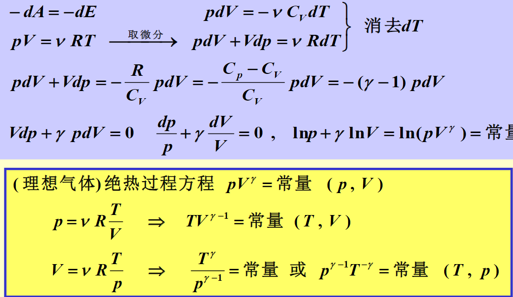
\(pV^\gamma\)和\(TV^{\gamma-1}\)为常量
等温线与绝热线比较¶
绝热线斜率>等温线斜率
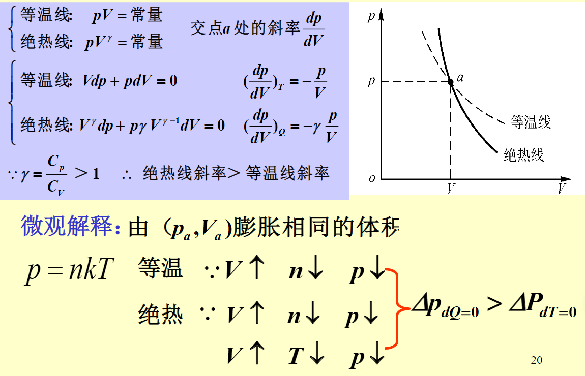
总结¶
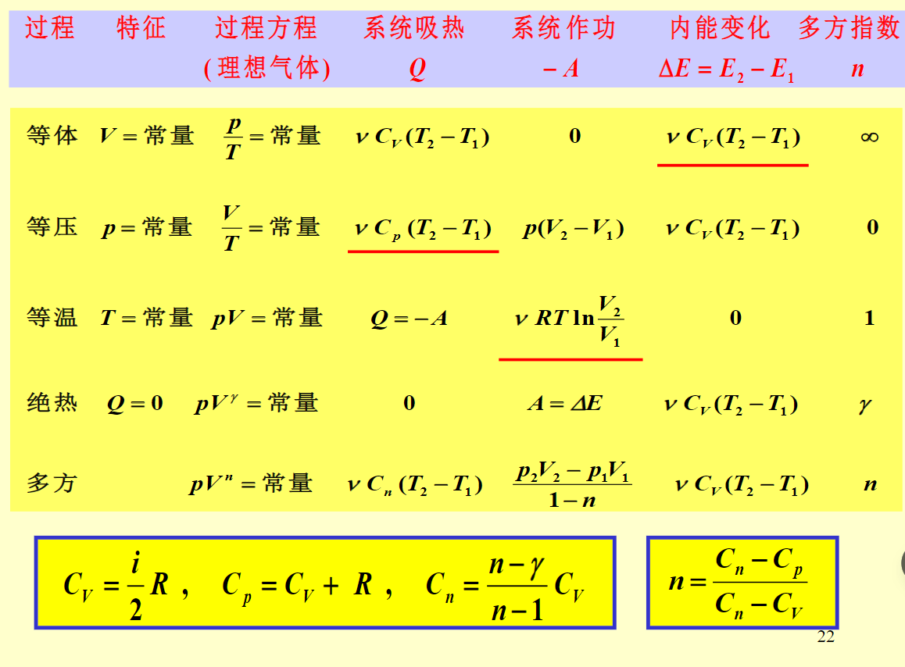
解题技巧¶
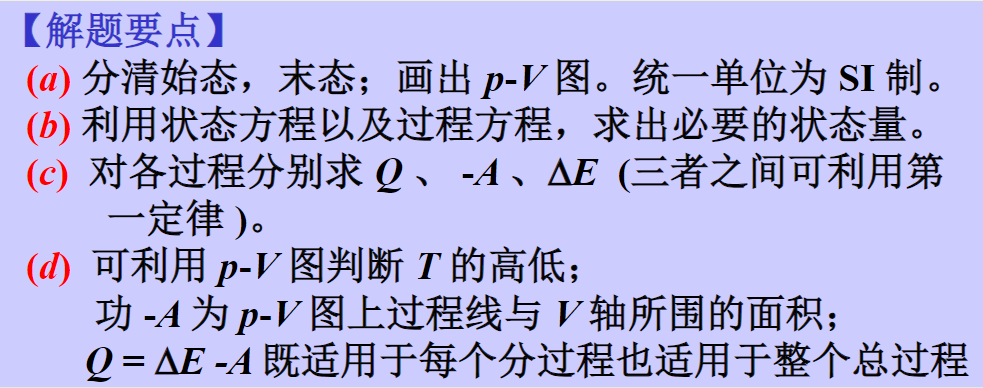
循环过程¶
经历一个循环，内能不变。\(\Delta E=0\)
热机¶
正循环（pV图中顺时针，系统对外做功）
工作机制：从高温热源吸收热量，对外做功，存在向低温热源放热的损耗
热机效率¶
\(\eta=\frac{{-A}}{Q_{吸}}=\frac{{Q_{1}-|Q_{2}|}}{Q_{1}}\)
致冷机¶
逆循环（外接对系统做功）
工作机制：外界对系统做功，使系统从低温源吸收热量，向高温源放出热量（目的是使低温源降温）
致冷系数¶
\(w=\frac{Q_{吸}}{A}=\frac{Q_{吸}}{|Q_{放}|-Q_{吸}}\)
解题¶
- 判断正循环还是逆循环（画出pV图）
- 判断用A算【pV图可解面积】还是用Q算
- 求Q,判断吸热/放热/不吸不放，分开处理
卡诺循环¶
高温热源 T1 , 低温热源 T2 (字母一定)
整个循环由两个等温过程和两个绝热过程组成
特殊结论¶
热温比相等¶
\(\frac{Q_1}{T_1} + \frac{Q_2}{T_2} = 0或 \frac{Q_1}{T_1} = -\frac{Q_2}{T_2} = \frac{|Q_2|}{T_2}\)
热机：\(\eta_{卡诺}=\frac{-A}{Q_{吸}}=1-\frac{|Q_{2}|}{Q_{1}}=1-\frac{T_{2}}{T_{1}}\)温差越大，热机效果越好
致冷机：\(w_{卡诺} = \frac{Q_{吸}}{A} = \frac{Q_2}{|Q_1|-Q_2} = \frac{1}{|\frac{Q_1}{Q_2}|-1} = \frac{1}{\frac{T_1}{T_2}-1}= \frac{T_2}{T_1-T_2} \quad (T_2 \uparrow \Rightarrow w_{卡诺} \uparrow )\)温差越小，热机效果越好
求效率只需要知道两温度即可
A,Q1,Q2的互求性¶
知道两温度的前提下你，只要知道A,Q_1,Q_2中任意一个值，即可求其他
热力学第二定律¶
开尔文表述¶
单一热源
热源、系统温度不变。恒温、均匀热源
否定了第二类永动机
对热机，热机效率小于1
克劳修斯表述¶
从低温物体传向高温物体
都是单一热源
致冷机，w无法趋近于infty
两表述等效性¶
实质¶
可逆过程¶
定义：准静态过程+无耗散
本质¶
克氏表述指明热传导过程是不可逆的
开氏表述指明功变热的过程是不可逆的
卡诺定理¶
卡诺循环是热机效率的极限
\(\eta \leq \eta_{c}=1-\frac{T_{2}}{T_{1}}\)
熵¶
引入：【自发（不可逆）过程的方向性】不可逆过程的不可逆性，决定于它的初态与末态，所以引入一个只有初末态有关的状态函数，判断过程的方向
有\(\oint (\frac{dQ}{T})_{可逆} = 0\)
定义熵S：
\(dS = \frac{dQ}{T}\)
\(\Delta S = S_b - S_a = \int_a^b \frac{dQ}{T}\)
【注意，熵与热温比的关系只在可逆过程成立】
状态量，可逆过程
与势能相似，没有绝对熵，只有熵变
计算【对于可逆过程】¶
通过\(dS={\frac{dQ}{T}}\)进行积分运算
1. 只与初末态有关
2. 只适用与可逆过程，因为可逆过程热温比才有意义
3. 由于熵变只有初末态有关，只要在两个状态中构建一个可逆过程即可
4. 特殊的，物体可逆相变化(等温等压)时熵变的计算：\(\Delta S_{相变}=\frac{Q}{T}\)
5. 对任意初态的气体熵变公式：
熵增加原理¶
孤立系统的自发过程总是向着熵增大的方向进行，当熵达到极大时，孤立系统达到平衡态
\(\oint _{不可逆}\frac{dQ}{T} < 0\)
\(dS \geq \frac{dQ}{T}\)
\(S_B - S_A \geq \int_A^B \frac{dQ}{T}\) （=可逆，>不可逆）
\(\because\)孤立系统\(dQ=0\)
\(\therefore dS\geq 0\)
统计意义¶
玻尔兹曼关系*¶
熵本质上有确定值，与势能随意定势能零点还是有区别的
电磁学¶
从实验定理推到基本定理
适用条件¶
静电场 —— 相对于观察者(惯性系)为静止的电荷所激发的场。
【性质：电荷是洛伦兹变换下的不变量】
库仑定理¶
注意正负号
是真空中,两个静止的点电荷间的相互作用.
电场¶
电荷间相互作用是通过电场以光速传递的
“场”是一种物质
作用：场源电荷->静电场->电荷
电场叠加原理¶
【物理量对应的物理规律是线性的，则物理量有叠加原理】
对连续分布的：
连续带电体¶
圆环¶
圆盘¶
直线¶
电场线¶
表示大小方向
性质¶
电通量¶
大小：
\(d\phi=\vec{ E}d\vec{S}=EdS\cos\theta=EdS_{⊥}\)
方向：
非闭合：随意取法向
闭合：取外法线方向 ，(自内向外) 为正
高斯定理¶
证明¶
引入立体角概念
应用¶
利用对称性，先处理合场强方向问题，使 \(EdS\cos\theta\) 中 E 与 \(\cos\theta\) 为常量，提出，简化计算
基本结论
叠加原理
典型结论¶
球体¶
- 球外部近似为点电荷：\(k \frac{q}{r^2}\)
- 球内部：\(k \frac{q}{R^3}r\)
无限长柱面¶
构造柱体高斯面，由于柱无限长，可知电场沿法线方向
\(\therefore E\cdot{2}\pi rl=\frac{q}{\epsilon{0}}=\frac{\lambda l}{\epsilon{0}}\)
\(E=\frac{1}{2\pi\epsilon_{0}} \frac{\lambda}{r}\)
无限大平板¶
构造对称高斯柱面，由于板无线大，电场沿板两侧法向方向
\(\therefore E\cdot 2\pi r^2=\sigma \cdot \frac{\pi r^2}{\epsilon_{0}}\)
\(E=\frac{\sigma}{2\epsilon_{0}}\)
$$